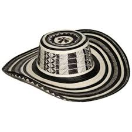

La prenda tiene su origen en la cultura indígena zenú, asentada en la región del río Sinú, departamentos de Córdoba y Sucre.
Bajo la denominación "raza zenú" se aglutinan tres imperios: Finzenú, Panzenú y Zenufana.
Tuchín y otras zonas donde también se elabora el sombrero, como Carretos y Sampués, corresponden
a Finzenú, considerado el más desarrollado de los tetos manufacturados.234 Desde la época
prehispánica, los aborígenes usaban el sombrero para guarecerse del inclemente sol durante
el cultivo del maíz, como lo atestiguan piezas arqueológicas del Museo del Oro de Bogotá
y del Museo Nacional Prehistórico Etnográfico "Luigi Pigorini" de Roma.5 También es probable
que fuera un componente ritual en la jerarquía y credos mágicos religiosos.6 El sombrero
se elaboraba de un solo color, blanco crema; la aparición del color negro es una evolución
posterior. Originalmente se conocía como "sombrero de vueltas" o "sombrero indiano" (en alusión
a su origen indígena).2 El origen de la denominación del sombrero es incierta.7 Vueltiao
es un localismo por volteado, participio pasado de voltear, «dar vueltas a alguien o algo».8
Algunos sostienen que el nombre hace alusión al número de vueltas de tejido que lo conforman.7
Otros aseguran que se le llama vueltiao porque al voltear las alas del sombrero por su vuelta
del medio, la parte externa queda convertida en interna y viceversa.7 Una de las poblaciones
más importantes para la comercialización de la prenda es el municipio de Sampués, Sucre.